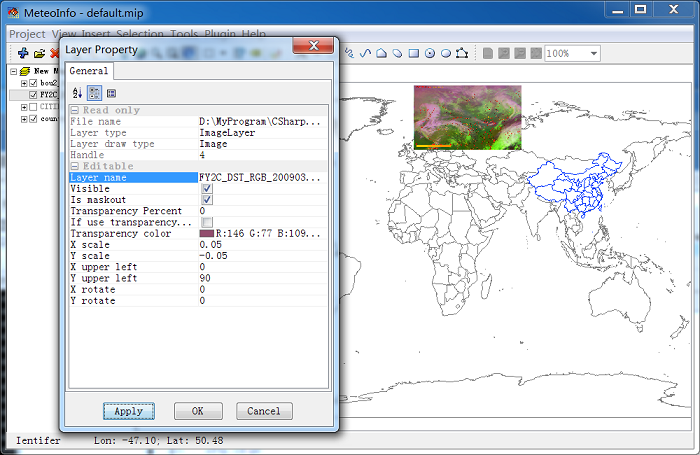

Image Layer¶
World File¶
Images are stored as raster data, where each cell in the image has a row and column number. In order to display images in real-world coordinates, it is necessary to establish an image-to-world transformation that converts the image coordinates to real-world coordinates. This transformation information is typically stored with the image.
This information was stored in a separate ASCII file. This file is generally referred to as the world file, since it contains the real-world transformation information used by the image. World files can be created with any editor. They can also be created using MeteoInfo.
It’s easy to identify the world file which should accompany an image file. The first and third characters of the image file’s suffix and a final “w” are used for the world file suffix. Therefore, for ‘mytown.tif’, the world file would be ‘mytown.tfw’. For ‘redlands.gif’, its world file would be ‘redlands.gfw’.
The contents of the world file will look something like this:
20.17541308822119 -A
0.00000000000000 -D
0.00000000000000 -B
-20.17541308822119 -E
424178.11472601280548 -C
4313415.90726399607956 -F
When this file is present, MeteoInfo performs the image-to-world transformation.
A = x-scale; dimension of a pixel in map units in x direction
B, D = rotation terms
C, F = translation terms; x,y map coordinates of the center of the upper-left pixel
E = negative of y-scale; dimension of a pixel in map units in y direction
Note: The y-scale (E) is negative because the origins of an image and a geographic coordinate system are different. The origin of an image is located in the upper-left corner, whereas the origin of the map coordinate system is located in the lower-left corner. Row values in the image increase from the origin downward, while y-coordinate values in the map increase from the origin upward.
Geo-Locate Image¶
If the image has world file, MeteoInfo will read the transform information and view the image according to the information. If the image data has no world file, MeteoInfo will write a world file automatically. Then you can adjust the parameters to view the image with correct spatial position.
Add an image without world file. Double click the image layer name in ‘Layers’ area. The transform parameters were showed in ‘Layer Set’ dialog. Change the value of ‘XScale’, ‘XUL’, ‘YScale’, ‘YUL’ to adjust the image in the map. Normally you have to try many times, so be patient of it.
After adjust correctly.